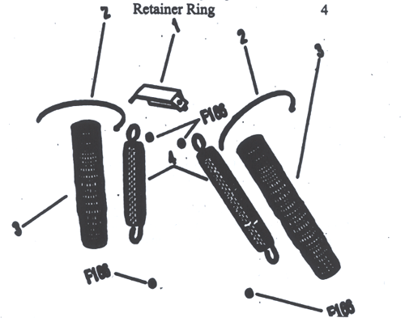

|
LOCKE MODEL 225 DUPLEX REEL MOWER ATTACHMENT FOR WALKER MOWERS 1985 AND UP
OPERATORS INSTRUCTION AND PARTS MANUAL
JANUARY 2001 APPLIES TO SERIAL NUMBERS 1O173 AND UP
WARNING IF MISUSED. THIS MOWER ATTACHMENT CAN CAUSE SEVERE INJURY OR DEATH. READ THE ENTIRE MANUAL BEFORE ATTEMPTING TO USE. ADJUST MAINTAIN. OR TRANSPORT IT
Williams Industries, Inc. P.O. Box 397 Grayson Georgia 300i7 USA
SAFE OPERATION PRACTICES
IMPORTANT: READ BEFORE OPERATING MOWER ATTACHMENT
Training I. Read the operating and Service instruction manual carefully. Be thoroughly familiar with controls and the proper use of the equipment. 2. Ask your Dealer or salesperson for safety demonstration regarding this attachment. 3. Keep the area of operation dear of all persons, particularly small children, and pets. 4. Never allow children to operate a power mower.
Preparation 1. Thoroughly inspect the area where the equipment is to be used and remove all stones, sticks wires, bones, and other foreign objects. 2. Make sure unit is properly attached, all shafts pto shafts connected, and all guards in place and rigidly attached. 3. Do not operate the equipment when barefoot or wearing open sandals. Always wear substantial footwear. 4. Disengage the pto dutch lever before starting the engine. 5. Never attempt to make a height adjustment while the engine is running. 6. Mow only in daylight or in good artificial light.
Operation 1. Keep feet on textured pedals, do not operate with out part# 4063 drive shaft cover In place. 2. Do not put Honda or feet near or under rotating parts. Keep dear of the discharge opening at all times. 3. Stop the blades when crossing gravel drive, walks, or roads. 4. Alter 8trtldng a foreign object, atop the engine, thoroughly inspect tile mower for any damage, and repair the damage before restarting and operating the mower. 5. if the equipment should start to vibrate abnormally, stop the engine and check immediately for the cause. vibration is generally a warning of trouble. 6. stop the engine whenever you leave the equipment, before cleaning the mower, and when making any repairs or inspections. 7. When cleaning, repairing, or inspecting, make certain the blades and all moving parts have stopped, And that engine is switched off. 8. Do not run the engine indoors. 9. Take special care with your feet when operating Walker tractor with out an attachment or deck. 10.Mow across the face of slopes; never up end down. Exercise extreme caution when changing direction on slopes. Do not mow excessively steep slopes. 11.Never operate the mower without proper guards, plates. or other safety protective devices in place.
Maintenance and Storage 1. Check the engine mounting belts at frequent intervals for proper tightness. 2. Keep all nuts, bolts, and screws tight to be sure the equipment is in safe working condition. 3. Never store the equipment with gasoline in the tank inside a building where fumes may reach an open flame or spark. Allow the engine to cool before storing in any enclosure. 4. To reduce fire hazard, keep the tractor and mower attachment free of grass, leaves. or excessive grease.
Williams Industries, Inc.
TABLE OF CONTENTS General Page no. Description, Model 225 Reel Attachment 1 Hardware and parts required for installation 2 Operation Attaching Unit to your Walker mower 3 Before Mowing Check List 3 Operating Recommendations 3 Shifting Reels to Transport position 4 Adjusting Height of cut 5
Maintenance Maintenance Schedule 6 Lubrication 7 Spring Counterbalancing 7 Drive Chain Adjustments 8 Gear box 8 Height Rollers 8 Reel to Bedknife Adjustment 9 Maintaining Blade Sharpness 9 Parts Manual 10 Plate 1 Boom Assembly 11-12 Plate 2 Arm Assembly 13-14 Plate 3 Hanger Assembly 15-16 Plate 4 Rear Reel Drive Assembly 17-18 Plate 5 Front Reel Drive Assembly 19-20 Plate 6 Walker Attachment Reel Assembly 21-22
General Description Locke Model 225 Reel Mower Attachment For Walker Mowers
The Model 225 Attachment was specifically designed to enhance the capabilities of your Walker mower. Its chief design features are a mid-size reel or cylinder mower attachment that easily mounts to a Walker mower. It is made in a size (48"Cut) that can mow large areas quickly, and with its sliding transport feature, can easily pass through gates, or fit easily in tight spaces for storage.
It uses the Walker PTO shaft for its power source, which gives a totally variable ground speed, reel speed, and frequency of cut adjustment. The reel drive system uses a PTO shaft; a gearbox, and chains & sprockets.
The high quality of cut is made possible by the precision cutting units, which are incorporated. The reels units are designed after our popular Commercial series reels, which offer "quick-Adjust" height of cut control, featuring the solid ground contact roller, which imparts a bold stripe in the cut grass.
A smooth cut is also achieved through the mowers ability to float smoothly over the turf, while minimizing the effects of holes, ditches, and other slight disturbances in the turf. The frame is designed to give both cutting units independent, full-floating cutting action as they travel the ground. There are several adjustments designed in its construction that allow a fine tuning of this feature.
SPECIFICATIONS Width of cut 48", (1219 mm) Transport width 40", (lOl6mm) Height of cut l~2"-3", (l3mm-76mm) Frequency of cut Variable Blades per reel 6 or 8 Reel Diameter 6-1/8", (iSSnun) Reel speed 700-1000 rpm Acres cut/hour 2.2@Smph, 3.2@ 7mph Weight 182 lbs., (83kg)
Hardware and Parts requirement for installation of Locke model 225 to Walker Mowers
The Locke model 225 Duplex Reel mower is shipped assembled except for the attachment of the input P.T.O. shaft, which is included. There are several Walker deck parts required for attaching the reel mower to your Walker tractor. These parts which arc described below, may or may not have been included by your Walker dealer or distributor.
Also, you might notice that the parts shown are identical to those on your Walker rotary decks. While it would be possible to transfer the parts from your deck to the reel attachment and back again, It would be prudent to obtain the below mentioned parts if they were not included with the reel mower.
Walker Deck Parts needed: Walker P.N. Description Quantity Key Number 5744-1 Spring Clip Bracket 1 1 5975-3 Cable Tie (50#x7") 4 2 5743-1 SpringCover 2 3 574347' Bxtension Spring 2 4 F166 retainer ring 4

An additional option, 8150 available through Walker distribution, is the Stevens mechanical deck lift system. It allows lifting of the reel units with out leaving the seat of the mower.
The reel unit can also be hoisted by hand. and secured with a hook without this option. The Stevens lift system also works well with existing rotary decks.
Attaching Unit to your Walker Mower
After removing Rotary deck or other attachment, position the tractor in front of Reel Attachment and cutoff engine. Manually roll attachment back to the tractor, and line up forks with tubes. Slide about half way back on forks, and then hook up PTO shaft, Making sure it clicks fully into position. Then slide all the way back and insert hitch pins (use the same ones as for the deck).
Trip the seat lever and hinge the seat up. Stand over the reel attachment, grasping the spring clip bracket and springs in both hands. Pull upwards while inserting spring clip bracket in its slot, while using your shoulder to push back the seat just enough to clear the seat bracket. Then push seat back to its home position or until it locks down.
If you are using the Stevens mechanical lift, now attach lift chains (using devises provided) to frame.
Before Mowing Check list (while Engine is switched off)
1. Make sure both hitch pins are in place on forks. 2. Inspect both PTO shafts to ensure they are fully connected. 3. Oil chains, and inspect for proper chain tension.(2 places) 4. Check that all height levers are in the same position.(4 places) 5. Check reel to bedknife adjustment. the reels) 6. Make sure no debris is lodged in either reel unit.
Operating Recommendations
Cylinder or Reel type mowers offer certain advantages to rotary decks, They have the ability to cut very low without scalping, they perform in damp or wet grass, they are quieter, operate at slower blade speeds (making them safer), and they are more mechanically efficient, which uses less fuel.
There are, however, some limitations and concerns while using the reel cutter. Reels tend to cut better the lower they are set. On the higher settings, (2"+), They will do a good job only on grass that is standing vertically. Lodged, or matted down grass will not be cut consistently.
Start out mowing at slower ground speeds and throttle settings. Remember that a reel is like a pair of scissors, a faster throttle setting does not produce a better cut. Also, a slower ground speed will deliver a smoother cut, as the mower is not bounced over the turf.
If the reel units are run dry, without cutting grass, after a few moments they may begin to squeal. while not seriously harmfull, it can create an annoying sound. To avoid this while using the mower, simply disengage pto whenever you are not cutting.
When making a 1 80-degree turn, we advise a 3-point turn rather than a zero radius turn. The smoother turn helps the reels slide on the turf better, and keeps the tires from cutting the turf.
SHIFTING REELS TO TRANSPORT POSITION
The model 225 has a sliding reel feature, which is designed to allow a maximum width of cut without sacrificing easy gate entry and compact storage ability.
To slide reel out to cutting position, follow the steps below:
1. Cut-off engine. 2. Walk around to the right side of the machine (from operators position), Pull up on spring-loaded pin (p.n.4042), while sliding reel outward. Release pin once the reel begins to slide and pin will automatically re-engage when the reel reaches its correct width. 3. Now move to the left side, Remove floor plate (p.n.4O63) and repeat step #2, while also removing the drive shaft (p.n.4O5O) from its rest and pulling out along with the reel. 4. Engage the drive shaft by pushing it on the splined sprocket hub (p.n.4O53), which is on the rear reel. This connection is a "ball-lock" yoke, so it should automatically lock in position. Always double check that the yoke is locked since there is a possibility that dirt or corrosion could inhibit this. 5. Make sure that none of the height adjustment levers (p.n.4O55,4O56) were bumped out of position. 6. Replace floor Plate (p.n.4O63)
To slide reels in to transport position, follow the steps below:
1. Cut-off engine. 2. Move to the left side reel, remove floor plate (p.n.4O63) and release driveshaft (p.n.4O5O) from splined sprocket hub (p.n.4O53). Pull on the sleeve and yoke should release. 3. Lay driveshaft on the ground behind reel. 4. Release pin (p.n.4O42), and slide reel inwards, about halfway. 5. Pick-up driveshaft and lay into hook shaped rest(p.n.4O58) located to the rear of the reel. 6. Continue pushing reel inwards until pin (p.n.4O42) locks into position, while making sure driveshaft guard does not conflict with frame. Replace floor plate (p.n.4063) 7. Now move to right side, release pin (p.n.4O42) and slide reel inward until it locks into position.
CAUTION! Under no circumstances should the PTO be engaged while in the transport position
WARNING or CAUTION Take extreme care while sliding reels Hands and fingers will be in Close proximity of sharp reels
Adjusting Height of Cut
Adjustment of the cut height is a two-phase procedure.
The first or primary adjustment is changing the distance of the ground roller to the bed-knife, or point of cut. This allows fast, accurate height changes to be made in ¼" increments. To adjust, cut-off engine, raise reel unit clear of the ground, push the adjustment handle (p.n.4O55/4O56) against the spring pressure, holding the handle firmly in place while allowing the smaller diameter of the pin (p.n.5038) to track through to the desired height notch. Release hand pressure on handle and spring pressure should pull the handle flat against the reel side plate. Remember, each notch equals ¼" with the lowest setting being for ½" cut, and the highest being 3".
The second adjustment is considered to be for fine-tuning, and should not require much adjustment once it is established. This adjustment allows the reels to be rotated slightly in pitch. This is most helpful in matching the two reels to cut the exact same height; It is also useful for very fine (less than ¼") changes, which are sometimes needed in the lower ranges. To adjust, with the engine switched-off and the reels on the ground, move around to the front of the reels. On each reel, on the top and front of the Hanger brackets (p.n.4023,4024) are two nuts threaded to a fine-thread clevis (p.n.4O74), which is connected to the front spacer bar (p.n.5033-25) of each reel. Using a 5/8" wrench, alternating between both nuts on each reel, you may make the height changes as follows, to raise- tighten or turn clockwise; to lower- loosen or turn counter-clockwise. This is a very fine adjustment as each full turn of the nuts equals only .025"/ .6mm
To measure height of cut settings, we suggest placing the whole machine on a flat, hard surface such as a smooth concrete floor. Shut-off the engine. Let the reels down to cutting position and take a measurement of the distance from the floor up to the top edge of the bed-knife. Do this on both sides of each reel.
The above procedure is the actual static measurement, which may be different than in actual turf conditions because of grass mat density, speed, and amount of weight bearing on height rollers. It may be helpful, therefore, to make field height adjustments as required.
Maintenance Schedule
1. Lubrication Frame 20 Hours I Weekly Drive Chains, Oil 8 Hours I Daily Drive shafts 50 Hours I Monthly Spindle Carrier, Inspect 300 Hours I Twice per year Gear Box, Check Oil Level 100 Hours I Monthly Gear Box, Replace Oil 300 Hours I Twice per year
2. Drive Chain Adjustment and Inspection 20 Hours I Weekly 3. Height Roller Inspection Every 3 Months 4. Reel Hinge Bushings (5047), inspection Every 3 Months 5. Reel Adjustment and Sharpening As Needed I Every 40 Hours
LUBRICATION
As with any Piece of outdoor power equipment, lubrication is vitally related to both short and long term performance. The lubrication schedule is shown on page 6. The following is a guide, which outlines all lube points and which type of lubricant is required.
Gear Box:
Use AGMA SEP gear lubricant. To check remove side plug and make sure oil is present at or very close to the side plug opening. To change oil, both a fill and drain plug are provided. Make sure that the plugs are not mixed up, as the fill plug has a special vent, which would leak oil if used elsewhere.
Drive Shafts:
Are equipped with Zerk-type pressure fittings, and require EP grease. The crosses, or joints should get 34 shots each, with the telescoping members requiring 8-10 shots.
Frame Points:
There are a total of three Zerk-type fittings on the Arm assembly (p.n. 4008), plate 2, which each need enough EP grease to slightly purge out moisture and dirt.
Other Points:
Light oil is used for lubrication of the following parts of the Reel Attachment: Both chains, and on 4 places on each reel where bronze bearing (P.N.5046) is used. A light spray oil is helpful on the reel and bed-knife surfaces prior to seasonal storage.
Sealed Ball Bearings (P.N. 5077) are used as the reel bearings, roller bearings and spindle bearings (on plate 5). They are permanently sealed and require no lubrication.
SPRING COUNTERBALANCING
Stainless steel Compression springs are provided, (See plate 2), together with adjusting screws for balancing each reel across its width. It is desirable, that the outer side of each reel is slightly lighter than the inner side. This feature is important in matching grass cut heights from one pass to the next.
Drive Chain Adjustments
Both reel units have a final drive composed of two sprockets, and a single chain. It is important to keep the chains properly tensioned to maximize the life of chains and sprockets.
To adjust Rear Reel Chain : With engine off and mower attachment lowered down, loosen 3 screws and nuts (P.N.4076, P.N.724-1), and pull gearbox(P.N.4033) rearward, away from reel. Tighten fasteners, while making sure chain and sprockets are in good alignment. With your fingers you should feel and see a slight amount of slack in the chain, no more than ½"(12mm) is good. A tight chain with no play can cause as much wear as a very sloppy chain.
To adjust Front Reel Chain : Follow the same procedure outlined above, except the spindle housing (P.N.4031), will be adjusted instead of gearbox.
Both reel chains can be adjusted greater than the distance of one pitch of the chain (1/2", l2mm), with the adjustment slots provided in the reel side plate (4027). If it seems like more take-up is needed, the chain has stretched to a point that chain replacement, rather than excessive sprocket wear is the smart move.
NOTE: ONLY USE #423 CHAIN ON THIS MACHINE! #40 CHAIN IS SIMILAR, BUT, DOES NOT MATCH
Gear Box
Is a precision, 90 degree, 1:1.5 ratio, single reduction bevel-gear box that utilizes bevel gearing, roller bearings, and an oil bath for lubrication and cooling. Proper care of the gearbox would include following the maintenance schedule, ~age 6), as well as taking care to engage and disengage the P.T.O slowly and smoothly in actual use.
Height Rollers
Aluminum rollers are used on both reels. They are maintenance free, except for bearing replacement, which should be made before any other related parts are damaged.
Aluminum rollers hold up well on grass, however, wear rapidly when exposed to turning, or transporting on hard surfaces. It is advised to raise attachment whenever possible, in these conditions.
REEL TO BEDKNIFE ADJUSTMENT
The cutting reel is mounted on sealed ball bearings. These bearings are carried in brackets hinged to the reel side plates. The hinged brackets have springs which urge the reel blades toward the stationary blade. An adjustable stop screw limits the swing of these brackets and hence the approach of the reel blades to the stationary blade. The correct setting is when these blades just touch each other, or are separated not more than .0025" (the thickness of a hair).
Note: If the blades rub tightly together, the wear is excessive and the power to drive them increases with the pressure.
If the blades are too far apart, it is impossible to cut grass. The tendency will be to munch the grass, and wedge it between the reel and bedknife.
MAINTAINING BLADE SHARPNESS
To provide consistent performance, lap the cutter blades on a regular basis, ideally after every 40 to 60 hours of operation. Your dealer will be able to assist you in maintaining Locke's legendary cut.
If you have the equipment to lap your reel, follow the steps below. 1 .)Remove both drive shafts. 2.)Loosen the reel adjusting screws enough to cause a slight friction on the bedknife. 3.)Attach a lapping motor to the reel. A lapping motor is a device that spins the reel in reverse at approximately 125 rpm. (Use Lapping Adapter PIN 5102). 4.)Saturate a brush with lapping compound and apply it to the reel. 5.)Continue lapping until the reel runs without the intermittent grinding sounds caused by high spots. 6.)Thoroughly clean all lapping compound from the cutter unit. We suggest a waterbased compound which is easily rinsed off with water. 7.)Reset the adjusting screws so that the reel blades just touch the bedknife. Each blade should cleanly cut a piece of paper at all points across the bedknife.
|